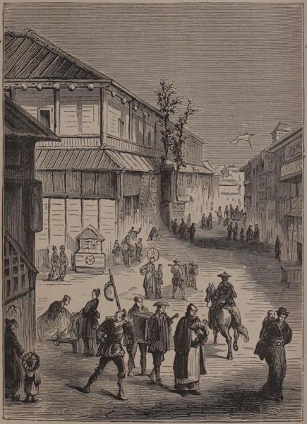

“Street in Yedo”
Japan: Historical and Descriptive (1877)
Besides the processions, pack-horses, and palanquins, the pedestrians on the Tokaido demand our attention. Some are crowned with queer-looking broad-brimmed straw hats; others have napkins tied round their heads, and their hats slung behind their backs, only to be used when it rains or when the sun’s rays are disagreeably powerful; while others again have the head bare and shaven in front, with the little pigtail brought forward and tied down upon the crown. Mendicant priests are met with, chanting prayers at every door, jingling some rings on the top of a tall staff, and begging for alms for the support of themselves and their temples. These are most independent-looking fellows, and seem to think themselves conferring a favour rather than receiving one. I observed that they were rarely refused alms by the people, although the same priests came round almost daily. To me the prayer seemed to be always the same namely, nam-nam-nam; sometimes sung in a low key, and sometimes in a high one. When the little copper cash—the coin of the country—was thrown into the tray of the priest, he gave one more prayer, apparently for the charity he had received, jingled his rings, and then went on to the next door. Blind men are also common, who give notice of their approach by making a peculiar sound upon a reed. These men generally get their living by shampooing their more fortunate brethren who can see. Every now and then a group of sturdy beggars, each having an old straw mat thrown across his shoulders, come into the stream which flows along this great highway. Then there is the flower-dealer, with his basket of pretty flowers, endeavouring to entice the ladies to purchase them for the decoration of their hair; or with his branches of “skimmi” (Illicium anisatum), and other evergreens, which are largely used to ornament the tombs of the dead.
All day long, and during a great part of the night too, this continual living stream flows to and from the great capital of Japan along the imperial highway. It forms a panorama of no common kind, and is certainly one of the great sights of the empire.
Yedo and Peking (1863)
Twenty-four hours in Japan had by no means dimmed my enjoyment of a jinriksha ride, and I cheerfully resigned myself to the charge of a delightful little Japanese with a white mushroom-shaped hat and a Chinese lantern. Looking down the long streets [of Tokyo], with the little open shops lighted by oil lamps, and the ever-moving lanterns of the jinrikshas, I felt I was in an Eastern city indeed, with a strong touch of fairyland by night, whatever might be its realities by day!
Japan As We Saw It (Bickersteth) (1893)
We proceed into the main street [of Tokyo]. It is alive with sound and motion. A constant patter of wooden clogs mingles with the cries of street vendors, the warning shouts of hurrying jin-riki-sha men, who leap in and out among the throng like shuttles in a loom, the measured grunting of coolies toiling with hand carts—so many in front relieving themselves in shouts like Aa haiya, to which those pushing behind answer in staccato groans like Ha ha—and the rumbling of horse-carriages. The shops are all open to the street, and the proprietors may be seen squatting complacently beside charcoal-brasiers, or, with their brows touching the mats, bowing customers out or in. The foot passengers walk at a moderate pace, but generally with short, quick steps, necessitated by the nature of their foot-gear. Couriers and others, who require greater freedom of movement, wear only straw sandals. Numbers of these thread the passing throng at an easy jog-trot, bearing on one shoulder a pole with a load suspended from each end. In addition to horse-carriages, which are comparatively few, there appear a few clumsy waggons drawn by oxen; but by far the greatest amount of labour is done by men. A lively scene it is, very different from the old-world calm of the castle and the partial desertion of the yashiki; and it is such a complication of what is novel to us with what is in imitation of things familiar, that a considerable time is required to take it all in.
One fact is at once apparent; there is a universal air of good humour. Nothing is more noticeable among the crowd than this. The cares of the world evidently press lightly upon them; they seem less alive than Europeans to the stern realities of life. None wears that intense distracted look so common in a Western city throng. They form a smiling, contented crowd, from the shaven-headed old grand dame to the crowing baby. To look at them—man, woman, boy, girl alike—one might fancy there was no such thing as sorrow in the world. True, there are visible not a few faces marked with small-pox; blindness seems very prevalent, and frequently enough the clothing of some of the poorer sort seems poor and scant; but, if one does not look too closely, the brilliant sunshine glosses and idealizes all that, not to speak of the universally sunny temperament which lights up even the plainest face from within.
The Land of the Morning (1882)
The street [through Ginza and Kyobashi, Tokyo] is wider than an ordinary Japanese street, it has broad paved side-walks, and the central thoroughfare is bordered with young trees. The reason of all this is, that a few years ago, when this part of the city was demolished by one of those vast conflagrations so frequent in Japan, the government took the opportunity of building the whole district in more substantial style. The district thus Europeanized is called Ginza, and lies on each side of that part of the main street which stretches from Shin Bashi (‘New Bridge’), near the railway station, northward to Kiyô Bashi (‘Capital Bridge’), a distance of about a mile.
It would be hard to tell what European or American article is not represented in one or other of these shops. Wherever we look, we see something to prove how completely the Japanese have resolved to imitate our Western civilization. Italian warehouses, butchers’ shops, wine and spirit stores, apothecaries’ halls, tailors’ establishments, with wax figures dressed in Paris fashions, hatters’, hosiers’, glovers’, shoemakers’, saddlers’, upholsterers’, cabinet-makers’, glaziers’, booksellers’, scientific instrument makers’, printers’, engravers’, watchmakers’, ironmongers’, photographers’ studios, with paintings in the European style of art, etc., etc.,—such are here more numerous than shops for the sale of Japanese goods. There is hardly a foreign article of clothing which one might not buy, from pearl buttons to linen shirts and swallow-tail coats; or an article of food from Liebig’s extract of beef to American hams; or a medicine, from Cockle’s pills to fly-blisters; or an instrument, from a penknife to a telescope. Little more than a decade ago hardly one of these commodities was to be seen in the city, and some, such as butcher-meat, were abhorred, as indeed they still are by the mass of the people; here they now are in ever increasing demand. ...
North of the Kiyô Bashi, we are beyond the semi-foreign part of the main street and among houses of purely Japanese build. ...
Book shops, gay with brilliantly coloured wood cuts, generally of the blood and thunder type, attract crowds of admirers; grocers are doing a thriving trade in rice, maize, wheat, millet, barley, tea, tobacco, beans, peas, eggs, sea-weed, dried fish, mochi (rice-bread), etc.; confectioners have a tempting array of peppermints, isinglass, casteira (seed-cake introduced by the Portuguese); lacquered trays, baskets, wooden clogs, and straw sandals are conspicuous; a ruddy-complexioned publican squats among his barrels of sake; a barber is in full view shaving not merely the beard and crown, but the very nostrils and eyelids of a customer; a large silk store is full of buyers, little shop-boys running to and fro in answer to the calls of the salesmen; an outfitting establishment is hung with ready-made clothes in cotton and silk; here are blacksmiths hard at work in a squatting attitude; purses, pencil cases, and metal tobacco-pipes; cabinets plain and lacquered; stationery and all sorts of fans, coloured and plain; dolls, toy horses, carts, etc.; an iron monger’s with a magnificent stock of bronze, copper, and iron kettles; blue and white porcelain for common use, which would gladden the eyes of European connoisseurs, with the more expensive wares of Satsuma, Hizen, Kiyôto (Kiyômidzu and Awata), Owari, and Kaga, and the fragile but much admired Banko earthenware; here again is a handsome stock of musical instruments; and in a hotel there is a great hubbub as the waitresses hasten to satisfy the demands of the various guests. Then there are stalls with steaming beans, or sweetmeats, or knicknacks of various kinds; coolies with burdens suspended from poles are everywhere shouting; newspaper-sellers recite the day’s news; and street-singers are strumming on their guitars.
The Land of the Morning (1882)
Our strolls through the streets of Kioto were highly amusing, especially when we took a turn along that street in particular which was principally devoted to the amusements of the people, and to the sale of tobacco and photographs. Here were the booths of the story-tellers; the waxwork heroes and heroines, respectively terrible and beautiful, and wonderful all; the conjurers, the tumblers, the loose-rope walkers; the working models of the unmentionable bad place, with the saws, and the augurs, and the other instruments for disintegrating the naughty, all at work by hand machinery; the curious animals, and the still more curious people that Nature sometimes makes in mistake; and perhaps more important than all, those long-tailed ancestors of ours who appear to have been made so without any mistake, and who linger superfluous on the stage now that their descendants have become as clever as my readers and I know ourselves to be. It was curious also to see, as we did here, peepshows of warlike scenes and battles in which were figuring several of the ministers, generals, and admirals whose acquaintance we had had the privilege of making in Tokio, and among them our distinguished host Admiral Kawamura, then in Kioto itself with us, but employing his time at the moment in a better way than that of peering into something even humbler than the penny peepshow of my native England. It was curious, too, to see in the photograph-shops these same ministers, generals, and admirals aforementioned, but here appearing, for the most part, not in their present modernised and European attire, but in the quaint and picturesque dresses and headdresses of Old Japan.
Japan: Its History, Traditions, and Religions (1880)
You have probably read so much about the Japanese booths (one-story wooden structures, with the whole front opening on the sidewalk), and have seen so many pictures of these low buildings with their odd-looking tile roofs, that you know what they are without any description of mine. The real enjoyment is to see whole streets of them; to see the tailor, the butcher, the sandal-maker and the fish merchant plying their various trades; to see the wilderness of babies, for they are met with at every turn, of all sorts and sizes and in appalling profusion; and then, again, to pass through the same streets after nightfall, when colored paper lanterns are hung up in front of every booth.
Jottings of Travel in China and Japan (1888)
It was interesting to watch the people on the street and to listen to the street-cries, which, like those in our own cities, sometimes bear little resemblance to the words supposed to be uttered. At night the noises were very annoying. Samisens, drums and other musical instruments, with singing, the cries of the peddlers and the shrill whistles of the a-mas, rendered sleep almost impossible until long after midnight, and then there were only a few hours of quiet, for other noises began very early in the morning.
The Sunrise Kingdom (1879)
It seems to me that the hardest worked among the natives are the coolies who push and pull the carts that serve the same purpose as carts or drays do with us. As horses and mules are scarce here, and human labor cheap, this work is done by men. Five or six of them will toil along the highway, struggling with their heavy load, and gasping, rather than singing, a monotonous sort of chant. No one of them sings more than two or three notes; as soon as he stops another takes it up, and thus it goes on unceasingly.
Jottings of Travel in China and Japan (1888)
Dirt and glare soon injure the eyes [in Yokohama], and one encounters the blind everywhere. They march like stately phantoms, fearless of danger, swinging their graceful robes and feeling their way with long sticks. Rikky calls a sharp “hey-ho,” and they are quick to hear. If confused in the locality, the blind man calmly plants himself midway, and merciful rikky makes a détour. Darkness and daylight are alike to him, but in the dead of night, when traffic ceases, the blind masseur is everywhere, threading his way through the thick of Japtown far into the Settlement and on the heights of the windy Bluff, in and out of the twisting alleys. Two high notes of his reed, weird and melancholy, far and near, sing through the darkness as he gropes his way, humbly seeking honest work, this unfortunate, who in many a land would be a beggar. For a few sen he will knead and pound and rub the invalid, and a livelihood is assured.
Not less mystic, in the night, is the sound of the watchman on his beat. He is hired by the residents of his locality, and like a grim spectre he makes his round. His lantern silhouettes him, and his long pole strikes the stones, and his rings of brass shake out their metal cry. He prowls behind the match-box shanties, and his patrons know they are secure.
Theatre Street [in Yokohama], where bright lanterns hang, is a scene of innocent delight, with long banners of black chirography which advertise the shows. Smiling and contented, the crowd struggles on, and the stranger sees the Japs as they march. Stalls of food, flowers, and crockery stretch far into the street; sweet potatoes, steaming from the boiler, are skinned for the buyer; snails, unsavoury rice, raw fish on spikes, are revealed by the flickering torch. Huge poppers of beans suggest pop-corn. There are forests of miniature trees, trained to every device of Japanese art. Three cents will buy a family of crockery babies stretched on their stomachs and raising their bald heads to show a single forelock, ready for scalping. In the shooting-gallery, the little lady bends low and presents a gun before we know that we are bent on war. The rubber pellet never hits the puppet, but another rifle splits a distant feather. On departure, the little lady rewards the visitor with a candy fish with red head and black eye, which will never be edible, but will serve as a souvenir till the sugar melts.
Against a fence the palmist spreads a table of mysterious literature and diagrams of stiff, unnatural hands. The sleeves of his long kimono are full of magic, and, behind his horn glasses, he looks the patriarchal theologian. Being ready for experiences, the friend says “hands down,” and there follows a stentorian harangue as he draws a wand through the crevices and expounds with solemn gravity. There are queer features in this hand’s history and the old chap turns from grave to gay. The crowd shrieks with mirth, while the victim feels very like a fool. It takes little to make the native laugh, but it would be less embarrassing to know what is being said. As the people chuckle and nudge and grow hysterical, we are evidently the butt of wild jokes. The philosopher pokes his stick between the fingers, to indicate that the victim will have much money, which will always trickle away. This gives the climax of mirth to the crowds, which roar with delight as the old man winds up his story and clicks his coin. He has them in good humour, and anxious to know their fate, as we leave him and saunter across to the auction, and the crowd again swings our way and watches for our bids as we handle the wares. The vender is young and gay and graceful, and he gains courage with this sudden rally. He flings the white goods on the air, and reaches them out for us to sample. Frantically he throws his arms about in dramatic despair, in response to low bids. He is a study in fleeting emotions as he dashes off scathing comment and flings merry jokes.
A Woman Alone in the Heart of Japan (1906)
◀ ClimateCountryside ▶